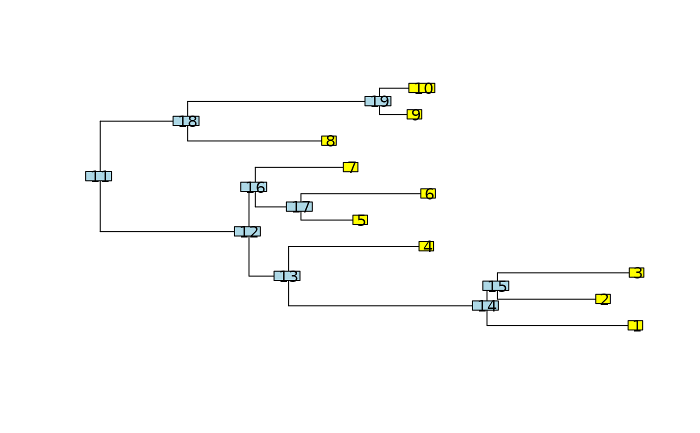

Functions for describing relationships among phylogenetic nodes.
Arguments
- x
a tree (a phylo object).
- node
an integer or a vector of integers corresponding to a node ID
- type
specify whether to return just direct children / parents or all
- include.self
whether to include self in list of siblings
- full
a logical indicating whether to return the MRCAs among all tips and nodes (if TRUE); the default is to return only the MRCAs among tips.
Details
These functions are inspired by treewalk in phylobase package, but
work on the S3 phylo objects. The nodes are the indices as given in
edge matrix of an phylo object. From taxon labels these indices can be
easily derived matching against the tip.label argument of an phylo
object, see example below. All the functions allow node to be either
a scalar or vector. mrca is a faster version of the mrca in ape, in
phangorn only because of dependencies.
If the argument node is missing the function is evaluated for all nodes.
See also
treewalk, as.phylo,
nodelabels
Examples
tree <- rtree(10)
plot(tree, show.tip.label = FALSE)
nodelabels()
tiplabels()

Ancestors(tree, 1:3, "all")
#> [[1]]
#> [1] 12 11
#>
#> [[2]]
#> [1] 12 11
#>
#> [[3]]
#> [1] 16 15 14 13 11
#>
Children(tree, 11)
#> [1] 12 13
Descendants(tree, 11, "tips")
#> [[1]]
#> [1] 1 2 3 4 5 6 7 8 9 10
#>
Siblings(tree, 3)
#> [1] 4
# Siblings of all nodes
Siblings(tree)
#> [[1]]
#> [1] 2
#>
#> [[2]]
#> [1] 1
#>
#> [[3]]
#> [1] 4
#>
#> [[4]]
#> [1] 3
#>
#> [[5]]
#> [1] 16
#>
#> [[6]]
#> [1] 19
#>
#> [[7]]
#> [1] 8
#>
#> [[8]]
#> [1] 7
#>
#> [[9]]
#> [1] 18
#>
#> [[10]]
#> [1] 14
#>
#> [[11]]
#> NULL
#>
#> [[12]]
#> [1] 13
#>
#> [[13]]
#> [1] 12
#>
#> [[14]]
#> [1] 10
#>
#> [[15]]
#> [1] 17
#>
#> [[16]]
#> [1] 5
#>
#> [[17]]
#> [1] 15
#>
#> [[18]]
#> [1] 9
#>
#> [[19]]
#> [1] 6
#>
mrca.phylo(tree, 1:3)
#> [1] 11
mrca.phylo(tree, match(c("t1", "t2", "t3"), tree$tip))
#> [1] 14
mrca.phylo(tree)
#> t7 t8 t9 t2 t10 t1 t4 t5 t3 t6
#> t7 1 12 11 11 11 11 11 11 11 11
#> t8 12 2 11 11 11 11 11 11 11 11
#> t9 11 11 3 16 15 14 14 14 14 13
#> t2 11 11 16 4 15 14 14 14 14 13
#> t10 11 11 15 15 5 14 14 14 14 13
#> t1 11 11 14 14 14 6 18 18 17 13
#> t4 11 11 14 14 14 18 7 19 17 13
#> t5 11 11 14 14 14 18 19 8 17 13
#> t3 11 11 14 14 14 17 17 17 9 13
#> t6 11 11 13 13 13 13 13 13 13 10
# same as mrca(tree), but faster for large trees